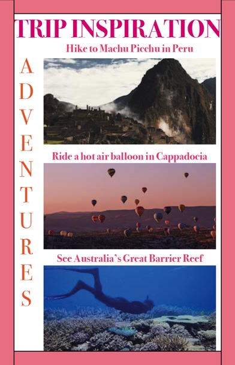
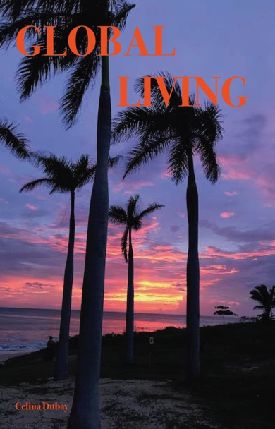
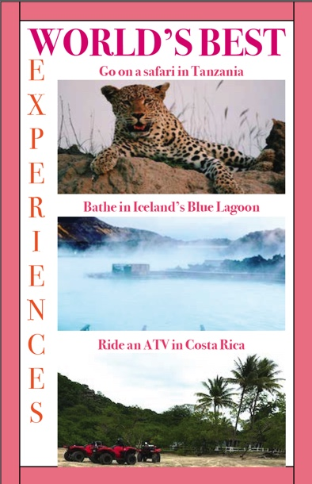

For this assignment I created a 16 page booklet resembling a travel magazine. The title is global living and it includes the following sections, all of which have different sub categories: World's Best; Trip Inspiration; Travel Tips; Food and Drink; and Destination of the Year. Below are the front cover and a couple examples of what the booklet looks like, along with a downloadable PDF.
  